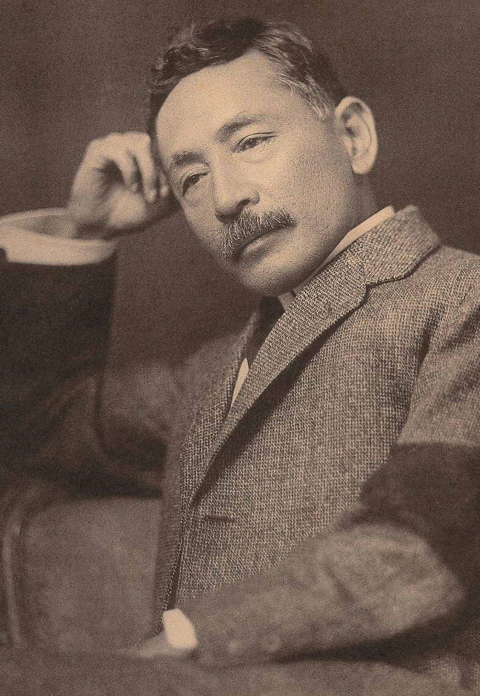
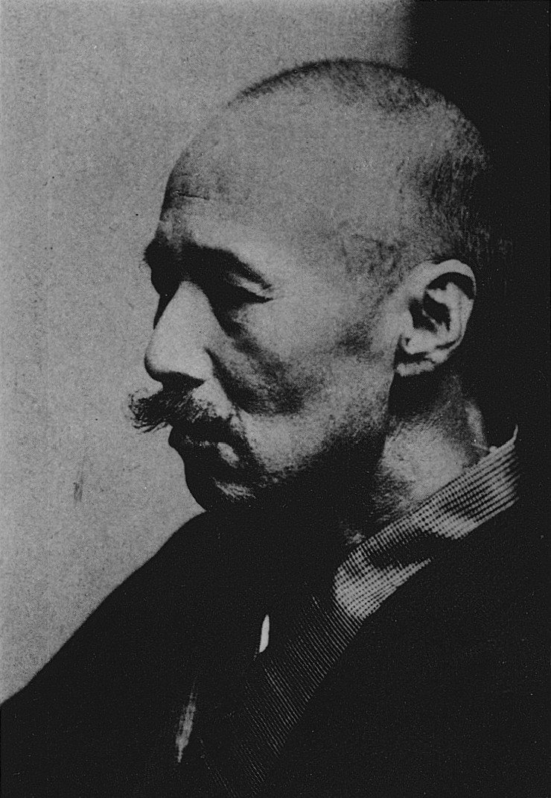

Ba nhà văn Natsume Soseki, Akutagawa Ryuunosuke, và Mori Ougai, với những đóng góp to lớn của mình trên văn đàn những năm đầu thế kỷ XX, đã được các nhà phê bình đánh giá là ba trụ cột của nền văn học hiện đại Nhật Bản.
Trang web tạo bởi Đinh Thiên Hương.
Logo được thiết kế sử dụng Canva.
Thông tin và hình ảnh được tham khảo từ Wikipedia.
Trân trọng cảm ơn GeeksforGeeks, Stack Overflow, W3schools và SGK Tin học 12.